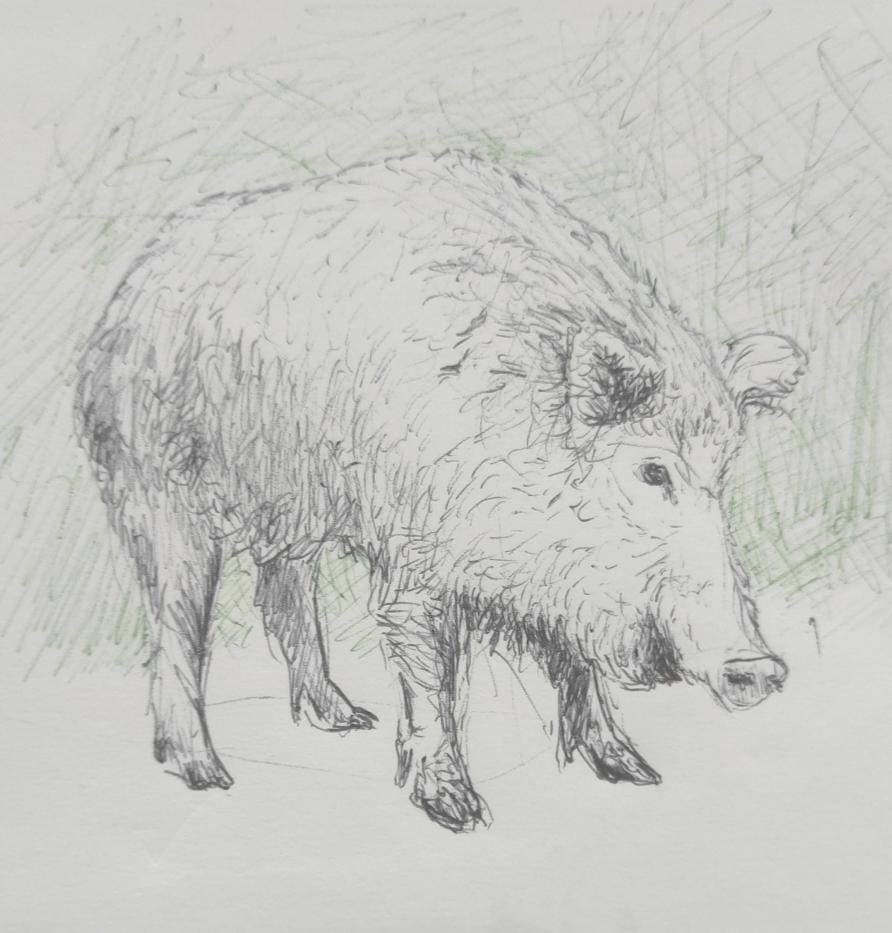
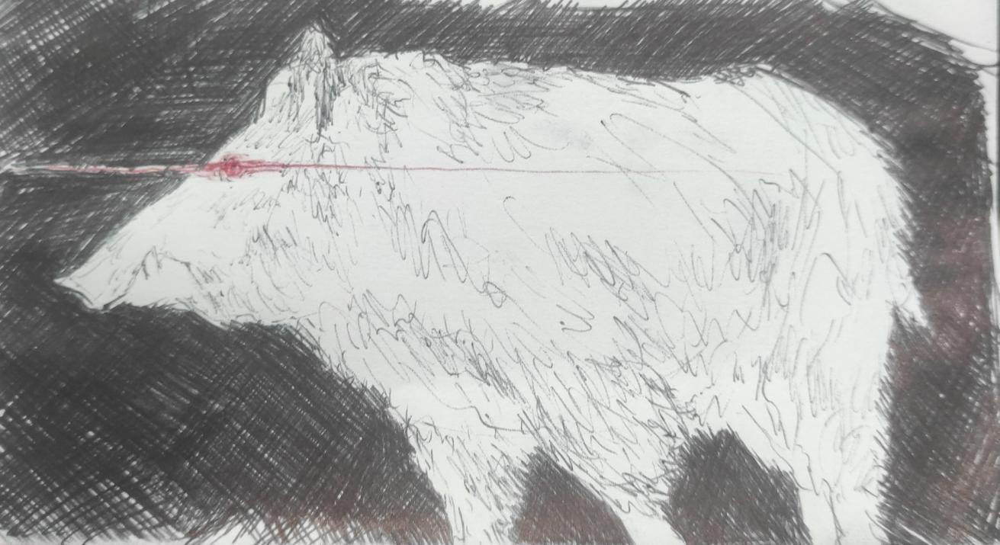
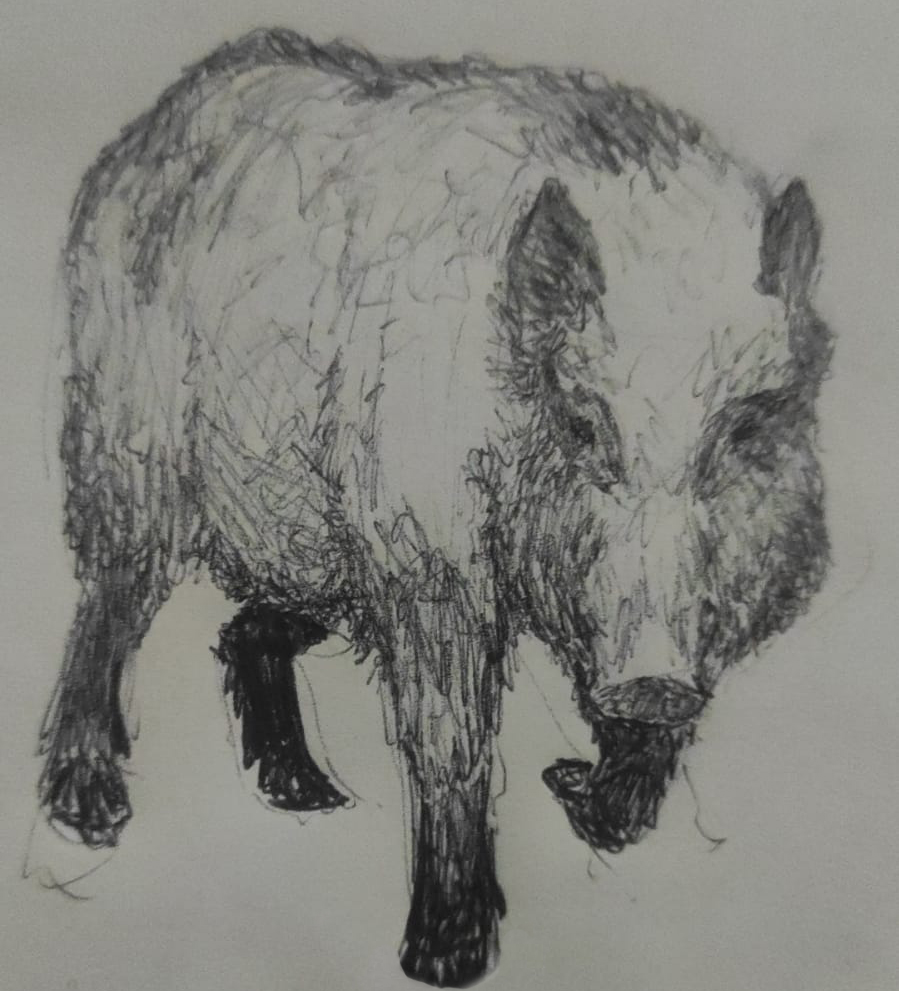
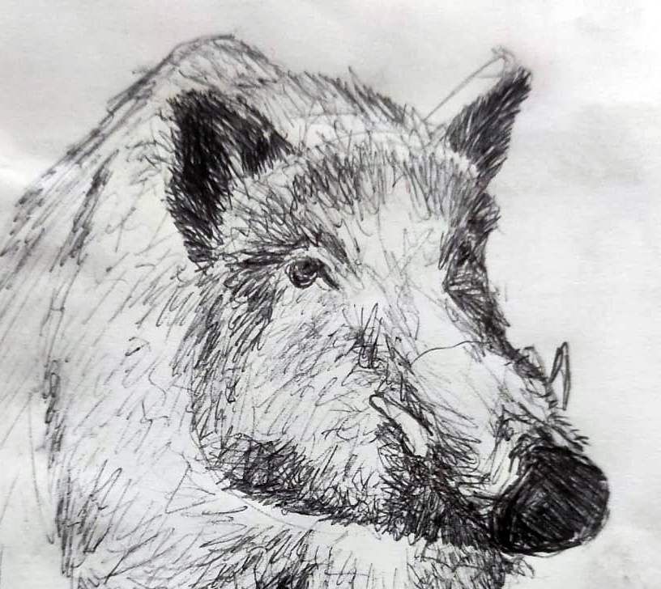
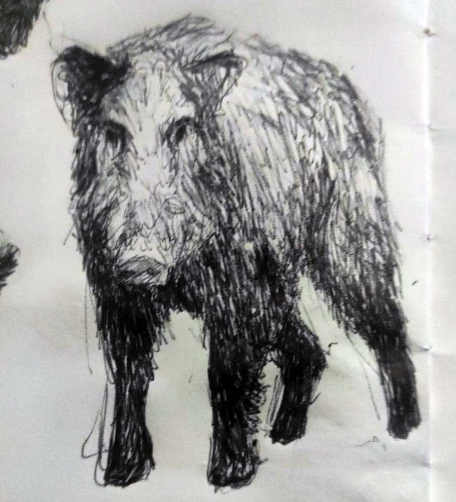
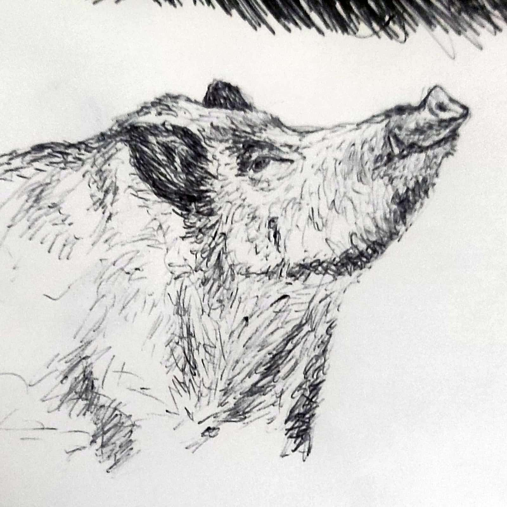
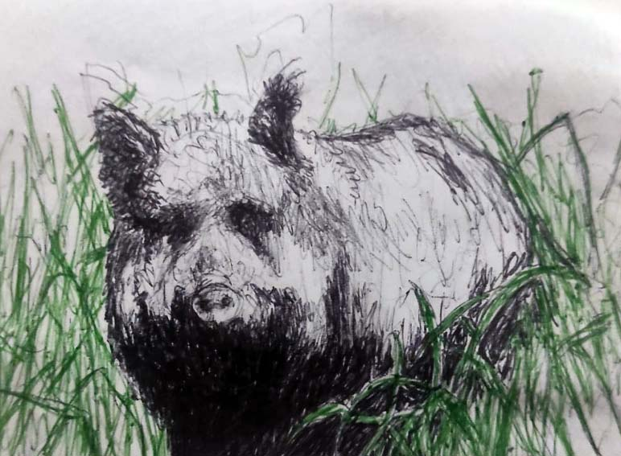
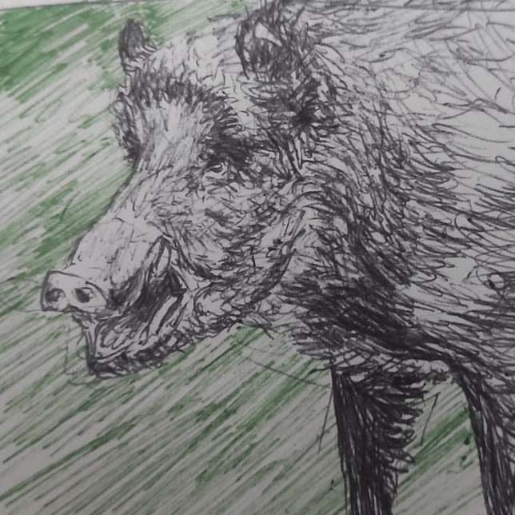
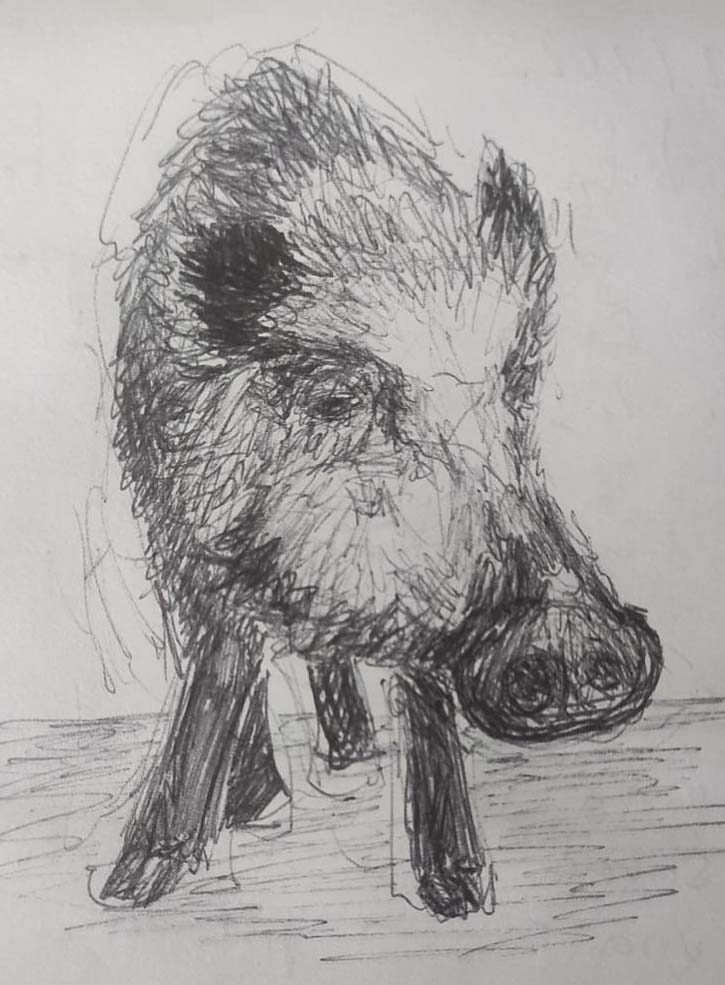

| GALERÍA DE JABALÍES (y algunos cerdos) |
| Este espacio está dedicado a unos de los mejores animales del mundo, los jabalíes, nuestros amigables hermanos de los montes. |
|  |  |  |  |  |
| 01. primer amigo | 02. contenidor localitzat | 03. nuclear armed | 04. skogsvinet | 05. brother of the forest |
|  |  |  |  | - |
| 06. som en enson borg | 07. may I have some trash, brother? | 08. I have no jarn but I must ild | 09. no place nowhere | - |